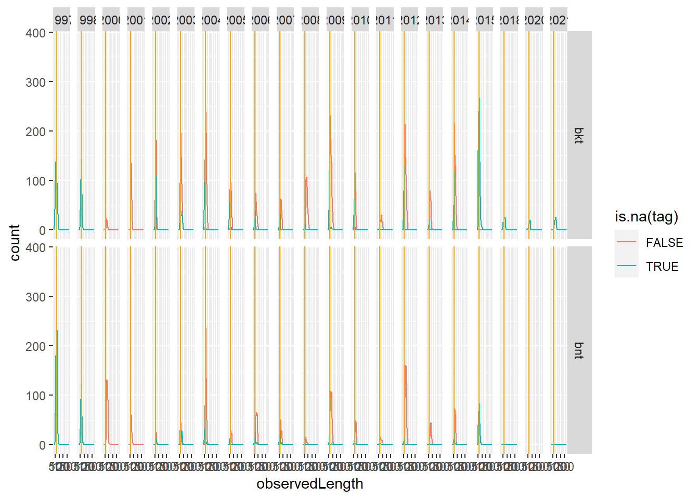
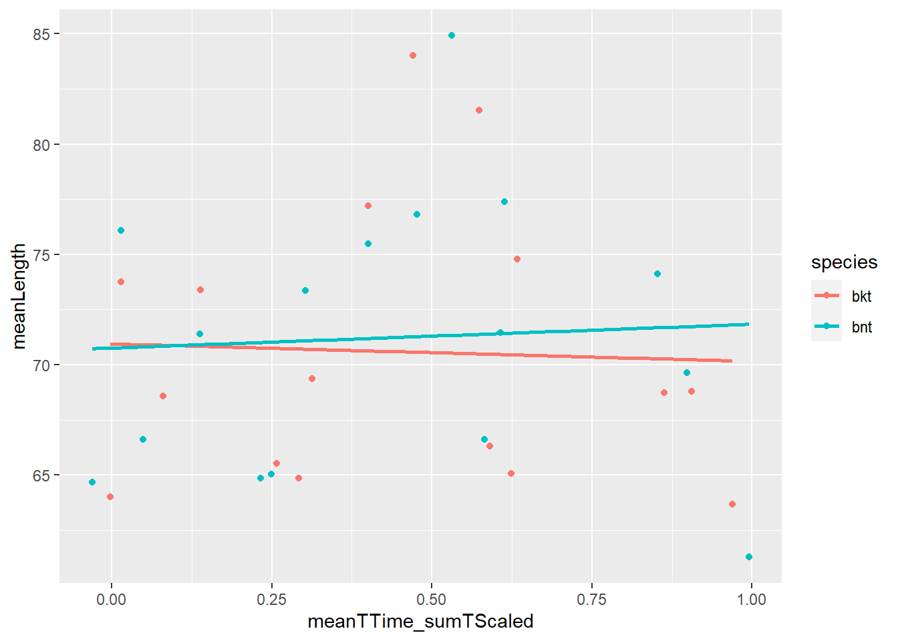

9 Young-of-year size model
The question here is what is driving body size variation across years in brook trout and brown trout in the WB?
We focus on ageInSamples == 1 (age-0 fish in the fall sample) fish for growth model. This is the first sampling occasion that most fish are big enough to tag. Not all fish are big enough, however, and there is a number of untagged fish each year. We need to include both tagged and untagged fish in our age-0 size model.
Factors to include in the model are
1. Sample date
2. Cumulative temperature prior to sampling
3. Cumulative flow prior to sampling
4. Extreme flow events?? Floods, droughts?
5. Fish density, age-0 counts across all three salmonids
9.1 Raw data for YOY model
- Environmental data (flow, temperature) are from 1, 3, or 5 months prior to date of individual capture. Also can used fixed dates: assumed spawning dates, assumed emergence dates and actual observation (sample) dates.
- All fish data are from age-0 in autumn.
- Abundance data.
9.2 Get data from targets
West Brook environmental data (flow and temperature) and electrofishing data
Code
library(targets)
envDataWB <- tar_read(envDataWB_target)
cdWB_electro <- tar_read(cdWB_electro_target)9.3 Get first observations
- Filter cdWB_electro for first observations in the autumn for age-0 fish (ageInsamples == 1). Including both tagged and untagged fish.
Code
firstObs_noTag <- tar_read(firstObs_noTag_target)
firstObs_tag <- tar_read(firstObs_tag_target)
firstObs0 <- tar_read(firstObs0_target)For each date in firstObs0 that at least one fish was captured, calculate summary stats for flow and temperature for different time periods:
1. Assumed spawning to capture
2. Assumed spawning to assumed emergence
3. Assumed emergence to capture
4. One month preceding capture
5. Three months preceding capture
5. Five months preceding capture
Then merge results with firstObs0 to create firstObs.
Code
firstObsDates <- tar_read(firstObsDates_target)
firstObs_Env <- tar_read(firstObs_Env_target)
# merge env data into firstObs0
firstObs <- tar_read(firstObs_target)Unnest firstObs so environmental summary stats are available as data frame with the name of the time interval as the prefix to the statisticVariable name
Code
firstObsUnnested <- tar_read(firstObsUnnested_target)Code
ggplot(firstObsUnnested, aes(oneMonth_sumTScaled, fiveMonth_sumTScaled)) +
geom_point() +
facet_wrap(~river)
9.3.1 Counts of captured fish
Min and max years (inclusive) for standardizing counts This is in targets, not sure if needed here
Code
minYear <- 2000
maxYear <- 2015Counts by river and species
Code
countsRSY <- tar_read(countsRSY_target)Code
ggplot(countsRSY, aes(year, countRS_Scaled, color = species)) +
geom_point() +
geom_line() +
facet_wrap(~ river)Counts by river
Code
countsRY <- tar_read(countsRY_target)Code
ggplot(countsRY, aes(year, countR_Scaled, color = river)) +
geom_point() +
geom_line()
Counts for the metaPopulation (WB, Jimmy, Mitchell)
Use these for modelling.
Code
countsMetaY <- tar_read(countsMetaY_target)Code
ggplot(countsMetaY, aes(year, count_Scaled)) +
geom_point() +
geom_line()
Merge metapopulation scaled counts into firstObsUnnested
Code
firstObsUnnested <- tar_read(firstObsUnnested_target)
firstObsUnnestedWB <- tar_read(firstObsUnnestedWB_target)9.4 Raw data plots
9.4.1 Frequency plots by species and river
9.4.2 Brook Trout, West brook
Code
#cd1 <- cdWB_electro %>% filter(ageInSamples == 1, species != 'ats')
plotSppRiv = function(s, r) {
ggplot(firstObs %>% filter(species == s, river == r), aes(observedLength, color = is.na(tag))) +
geom_freqpoly() +
geom_vline(xintercept = 60) +
ggtitle(paste(s, r, sep = ', ')) +
xlim(c(30,125)) +
facet_wrap(~ year, scales = "free_y")
}
species = 'bkt'
riverOrdered = "west brook"
plotSppRiv(species, riverOrdered)
9.4.3 Brook Trout, wb jimmy

9.4.4 Brook Trout, wb mitchell

9.4.5 Brook Trout, wb obear

9.4.6 Brown Trout, West brook

9.4.7 Brown Trout, wb jimmy

9.4.8 Brown Trout, wb mitchell

9.4.9 Brown Trout, wb obear - there are no Brown trout in O’Bear
9.4.10 Trout, in the WB mainstem only
Code
ggplot(firstObs %>% filter(species != "ats"), aes(observedLength)) +
geom_freqpoly() +
geom_vline(xintercept = 60, color = 'orange') +
facet_grid(species ~ year)
Code
ggplot(firstObs %>% filter(species != "ats"), aes(observedLength, color = is.na(tag))) +
geom_freqpoly() +
geom_vline(xintercept = 60, color = 'orange') +
facet_grid(species ~ year)
9.4.11 Why are there untagged fish bigger than 60mm?
Check 2002/bkt/WB, as an example Answer: because they are outside the study area (area = ‘above’ or ‘below’) or were tagging mortalities
Code
firstObs2002BKT <- firstObs %>% filter(year == 2002, species == "bkt")
table(is.na(firstObs2002BKT$tag))
FALSE TRUE
295 253 Code
ggplot(firstObs2002BKT, aes(observedLength, color = is.na(tag))) +
geom_freqpoly() +
geom_vline(xintercept = 60)
Code
# looks like untagged area=inside fish wee morts, the rest were above or below
ggplot(firstObs2002BKT, aes(observedLength, color = is.na(tag))) +
geom_freqpoly() +
geom_vline(xintercept = 60) +
facet_grid(~area)
Code
# check 2003
ggplot(firstObs %>% filter(year == 2003, species == "bkt"), aes(observedLength, color = is.na(tag))) +
geom_freqpoly() +
geom_vline(xintercept = 60) +
facet_grid(~area)
Code
# same story as 20029.5 Models based on yearly means
Filter firstObsUnnestedWB for bkt, bnt and min/maxYear
Code
d_WB_BKT_BNT <- firstObsUnnestedWB %>% filter(species != "ats", year %in% minYear:maxYear) %>%
mutate(species01 = ifelse(species == "bkt", 1, 0))
hist(d_WB_BKT_BNT$detectionDate, breaks = 250)
Code
d_BKT_BNT <- firstObsUnnested %>% filter(species != "ats", year %in% minYear:maxYear) %>%
mutate(species01 = ifelse(species == "bkt", 1, 0))Mean model functions
Code
getMeansData <- function(d, t, f) {
means <- d %>%
group_by(species, year) %>%
summarize(meanLength = mean(observedLength, na.rm = TRUE),
meanEmerge_detect_sumTScaled = mean(emerge_detect_sumTScaled, na.rm = TRUE),
meanEmerge_detect_sumFScaled = mean(emerge_detect_sumTScaled, na.rm = TRUE),
meanTTime_sumTScaled = mean(get(t), na.rm = TRUE),
meanFTime_sumFScaled = mean(get(f), na.rm = TRUE),
meanYdayScaled = mean(ydayScaled, na.rm = TRUE),
meanCount_Scaled = mean(count_Scaled, na.rm = TRUE)
)
return(means)
}
getMeansDataByRiver <- function(d, t, f) {
means <- d %>%
group_by(species, year, river) %>%
summarize(meanLength = mean(observedLength, na.rm = TRUE),
meanEmerge_detect_sumTScaled = mean(emerge_detect_sumTScaled, na.rm = TRUE),
meanEmerge_detect_sumFScaled = mean(emerge_detect_sumTScaled, na.rm = TRUE),
meanTTime_sumTScaled = mean(get(t), na.rm = TRUE),
meanFTime_sumFScaled = mean(get(f), na.rm = TRUE),
meanYdayScaled = mean(ydayScaled, na.rm = TRUE),
meanCount_Scaled = mean(count_Scaled, na.rm = TRUE)
)
return(means)
}
plotMeans <- function(means){
out <- list()
out[[1]] <- ggplot(means, aes(meanTTime_sumTScaled, meanLength, color = species)) +
geom_point() +
geom_smooth(method = "lm", se = FALSE)
out[[2]] <- ggplot(means, aes(meanFTime_sumFScaled, meanLength, color = species)) +
geom_point() +
geom_smooth(method = "lm", se = FALSE)
out[[3]] <- ggplot(means, aes(meanTTime_sumTScaled, meanFTime_sumFScaled, color = species)) +
geom_point() +
geom_smooth(method = "lm", se = FALSE)
return(out)
}
runMeanModels <- function(means) {
modLMMeans1 <- lm(meanLength ~ (factor(species) + meanFTime_sumFScaled + meanTTime_sumTScaled + meanYdayScaled + meanCount_Scaled), data = means)
modLMMeans2 <- lm(meanLength ~ (factor(species) + meanFTime_sumFScaled + meanTTime_sumTScaled + meanYdayScaled + meanCount_Scaled)^2, data = means)
modLMMeans3 <- lm(meanLength ~ (factor(species) + meanFTime_sumFScaled + meanTTime_sumTScaled + meanYdayScaled + meanCount_Scaled)^3, data = means)
return(list(modLMMeans1, modLMMeans2, modLMMeans3))
}Mean lengths by river. This is information only. Using the WB data only shown here and in the next graph for the models.
Mean lengths for the mean length model.

Graphs for variables that do not depend on number of months


9.5.0.1 Models with flow and temperature from previous one month
[[1]]
[[2]]
[[3]]
df AIC
mod1[[2]] 17 176.2075
mod1[[3]] 27 181.7035
mod1[[1]] 7 181.8187
Call:
lm(formula = meanLength ~ (factor(species) + meanFTime_sumFScaled +
meanTTime_sumTScaled + meanYdayScaled + meanCount_Scaled),
data = means)
Residuals:
Min 1Q Median 3Q Max
-6.2779 -1.9839 -0.8754 1.0981 10.5908
Coefficients:
Estimate Std. Error t value Pr(>|t|)
(Intercept) 72.4359 1.0722 67.558 < 2e-16 ***
factor(species)bnt 0.6550 1.3128 0.499 0.622039
meanFTime_sumFScaled 1.6769 0.3849 4.356 0.000184 ***
meanTTime_sumTScaled -10.3842 2.3734 -4.375 0.000175 ***
meanYdayScaled -3.4856 1.7314 -2.013 0.054554 .
meanCount_Scaled -2.5187 0.7068 -3.564 0.001443 **
---
Signif. codes: 0 '***' 0.001 '**' 0.01 '*' 0.05 '.' 0.1 ' ' 1
Residual standard error: 3.695 on 26 degrees of freedom
Multiple R-squared: 0.6966, Adjusted R-squared: 0.6383
F-statistic: 11.94 on 5 and 26 DF, p-value: 4.544e-06Relative importance for main effects model
factor(species) meanFTime_sumFScaled meanTTime_sumTScaled
0.00395522 0.24940595 0.19990058
meanYdayScaled meanCount_Scaled
0.06280977 0.18053989 9.5.0.2 Models with flow and temperature from previous three months
[[1]]
[[2]]
[[3]]
df AIC
mod3[[3]] 27 177.0683
mod3[[2]] 17 181.7547
mod3[[1]] 7 187.3979
Call:
lm(formula = meanLength ~ (factor(species) + meanFTime_sumFScaled +
meanTTime_sumTScaled + meanYdayScaled + meanCount_Scaled),
data = means)
Residuals:
Min 1Q Median 3Q Max
-6.3569 -2.8523 0.3445 1.8018 9.2951
Coefficients:
Estimate Std. Error t value Pr(>|t|)
(Intercept) 73.4882 1.8809 39.070 < 2e-16 ***
factor(species)bnt 0.8334 1.4312 0.582 0.565351
meanFTime_sumFScaled 2.2450 0.5866 3.827 0.000732 ***
meanTTime_sumTScaled -8.8499 3.6769 -2.407 0.023489 *
meanYdayScaled 0.7120 1.4287 0.498 0.622411
meanCount_Scaled -3.1604 0.7937 -3.982 0.000490 ***
---
Signif. codes: 0 '***' 0.001 '**' 0.01 '*' 0.05 '.' 0.1 ' ' 1
Residual standard error: 4.032 on 26 degrees of freedom
Multiple R-squared: 0.6388, Adjusted R-squared: 0.5694
F-statistic: 9.197 on 5 and 26 DF, p-value: 3.902e-05Relative importance for main effects model
factor(species) meanFTime_sumFScaled meanTTime_sumTScaled
0.004325792 0.281631981 0.060776249
meanYdayScaled meanCount_Scaled
0.066333713 0.225756051 9.5.0.3 Models with flow and temperature from previous five months
[[1]]
[[2]]
[[3]]
df AIC
mod5[[3]] 27 167.4034
mod5[[1]] 7 193.2144
mod5[[2]] 17 208.3847
Call:
lm(formula = meanLength ~ (factor(species) + meanFTime_sumFScaled +
meanTTime_sumTScaled + meanYdayScaled + meanCount_Scaled),
data = means)
Residuals:
Min 1Q Median 3Q Max
-5.9186 -3.3732 0.3856 2.4470 11.8564
Coefficients:
Estimate Std. Error t value Pr(>|t|)
(Intercept) 71.1144 1.9342 36.767 < 2e-16 ***
factor(species)bnt 0.8911 1.5671 0.569 0.57450
meanFTime_sumFScaled 2.6934 0.8705 3.094 0.00468 **
meanTTime_sumTScaled -3.5748 2.9746 -1.202 0.24029
meanYdayScaled 3.2403 1.5506 2.090 0.04657 *
meanCount_Scaled -2.8957 0.8613 -3.362 0.00240 **
---
Signif. codes: 0 '***' 0.001 '**' 0.01 '*' 0.05 '.' 0.1 ' ' 1
Residual standard error: 4.415 on 26 degrees of freedom
Multiple R-squared: 0.5668, Adjusted R-squared: 0.4835
F-statistic: 6.805 on 5 and 26 DF, p-value: 0.0003537Relative importance for main effects model
factor(species) meanFTime_sumFScaled meanTTime_sumTScaled
0.004330339 0.226812955 0.017322018
meanYdayScaled meanCount_Scaled
0.107186866 0.211177826 r-squared values and AICs for 1st, 2nd (2-way interactions) and 3rd (3-way interactions) order models
| Order | r2 | numMonths |
|---|---|---|
| 1 | 0.697 | 1 |
| 2 | 0.864 | 1 |
| 3 | 0.913 | 1 |
| Order | r2 | numMonths |
|---|---|---|
| 1 | 0.639 | 3 |
| 2 | 0.838 | 3 |
| 3 | 0.925 | 3 |
| Order | r2 | numMonths |
|---|---|---|
| 1 | 0.567 | 5 |
| 2 | 0.628 | 5 |
| 3 | 0.945 | 5 |
| df | AIC | numMonths | |
|---|---|---|---|
| mod1[[2]] | 17 | 176.207 | 1 |
| mod1[[3]] | 27 | 181.703 | 1 |
| mod1[[1]] | 7 | 181.819 | 1 |
| df | AIC | numMonths | |
|---|---|---|---|
| mod3[[3]] | 27 | 177.068 | 3 |
| mod3[[2]] | 17 | 181.755 | 3 |
| mod3[[1]] | 7 | 187.398 | 3 |
| df | AIC | numMonths | |
|---|---|---|---|
| mod5[[3]] | 27 | 167.403 | 5 |
| mod5[[1]] | 7 | 193.214 | 5 |
| mod5[[2]] | 17 | 208.385 | 5 |
Relative importance of main effects models (repeat of above, but all in one place here)
| var | relImp | numMonths |
|---|---|---|
| factor(species) | 0.004 | 1 |
| meanFTime_sumFScaled | 0.249 | 1 |
| meanTTime_sumTScaled | 0.200 | 1 |
| meanYdayScaled | 0.063 | 1 |
| meanCount_Scaled | 0.181 | 1 |
| var | relImp | numMonths |
|---|---|---|
| factor(species) | 0.004 | 3 |
| meanFTime_sumFScaled | 0.282 | 3 |
| meanTTime_sumTScaled | 0.061 | 3 |
| meanYdayScaled | 0.066 | 3 |
| meanCount_Scaled | 0.226 | 3 |
| var | relImp | numMonths |
|---|---|---|
| factor(species) | 0.004 | 5 |
| meanFTime_sumFScaled | 0.227 | 5 |
| meanTTime_sumTScaled | 0.017 | 5 |
| meanYdayScaled | 0.107 | 5 |
| meanCount_Scaled | 0.211 | 5 |
9.5.1 Models with extreme flow events (droughts)
We get negative cumulFlows because we have some negative flows from the flow extension model
Code
# put some of these calculations into envDataWB
envDataWBFlow = tar_read(envDataWBFlow_target)Code
firstObsYears <- firstObs %>%
filter(year %in% minYear:maxYear,
yday > 100, yday < 300)Code
ggplot(envDataWBFlow, aes(yday, flow)) +
geom_point(aes(yday, observedLength/20), size = 0.75, alpha = 0.2, color = 'lightblue', data = firstObsYears) +
geom_point(size = 0.5) +
scale_x_continuous(breaks = seq(0,300, 30)) +
facet_wrap(~year)Code
ggplot(envDataWBFlow, aes(yday, cumulFlow / 10)) +
geom_point(aes(yday, observedLength / 20), size = 0.75, alpha = 0.2, color = 'lightblue', data = firstObsYears) +
geom_point(size = 0.5, color = 'darkgrey') +
geom_point(aes(yday, cumulTemp / 800), size = 0.5, color = "orange", data = envDataWBFlow) +
geom_point(aes(yday, flow), size = 0.5, data = envDataWBFlow) +
scale_x_continuous(breaks = seq(0, 300, 30)) +
#theme_publication() +
facet_wrap(~year)
Code
ggplot(envDataWBFlow, aes(yday, cumulFlow, color = (year))) +
geom_point() +
scale_x_continuous(breaks = seq(0, 300, 30)) 
Code
ggplot(envDataWBFlow, aes(yday, cumulTemp, color = (year))) +
geom_point() +
#geom_point(aes(yday, cumulTemp / 800, color = factor(year)), data = tmp) +
scale_x_continuous(breaks = seq(0, 300, 30))
Is there a sampling section effect?
Note: there are fish in sections > 50 for years 2002 and 2003, need to filter out early
Code
ggplot(d_WB_BKT_BNT %>% filter( section <= 47), aes(factor(section), observedLength)) +
geom_boxplot() +
geom_smooth() +
facet_wrap(~year)Code
ggplot(d_WB_BKT_BNT %>% filter( section <= 47), aes(factor(year), observedLength)) +
geom_boxplot() +
geom_smooth() +
facet_wrap(~section)